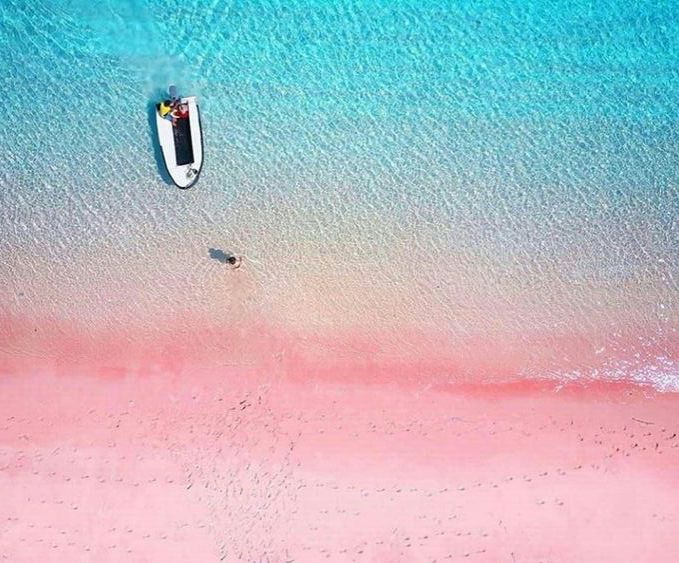
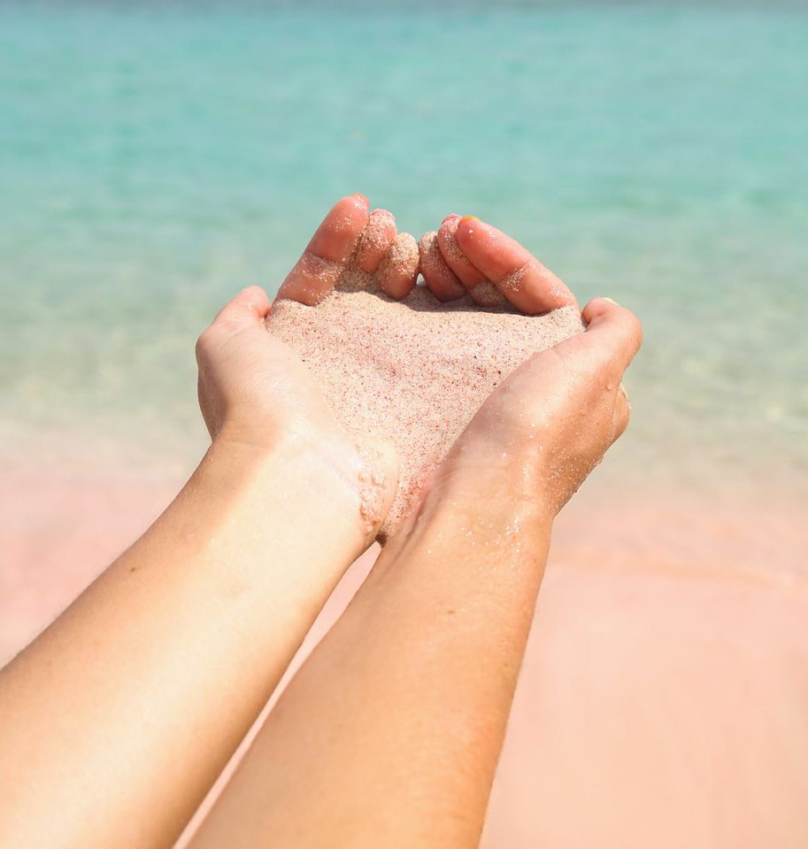

 |
1. Pulau Lombok terletak di desa Sekaroh, Jerowaru, Kabupaten Lombok Timur, Nusa Tenggara Barat. 2. Taman Nasional Komodo, Nusa Tenggara Barat |
Pantai Pink tidak hanya menyuguhkan panorama pantai yang indah saja, namun kawasan wisata alam ini juga memiliki kekayaan dan keindahan pemandangan bawah laut yang menarik untuk diselami. Taman di bawah air laut kawasan wisata ini menjadi rumah dari berbagai jenis ikan, terumbu karang dan juga berbagai jenis biota yang lain. Oleh karena itu, diving atau snorkeling di pantai ini menjadi salah satu aktivitas yang sayang untuk dilewatkan. Saat pasir tersapu oleh deburan ombak maka warna pink yang sangat lembut menjadi nampak jelas. Beberapa pendapat menyatakan bahwa warna merah muda tersebut berasal dari pecahan karang merah dan sudah mati yang memang banyak ditemukan di kawasan wisata ini. Pemandangan matahari terbenam disini juga cukup fenomenal. Banyak pengunjung yang rela menunggu senja tiba demi menyaksikan keindahan pemandangan sunset yang terkenal menakjubkan. |
|---|

|
Kawasan Pariwisata Jalan Raja Haji Fisabililah No.88, Sebong Lagoi, Tlk. Sebong, Kabupaten Bintan, Kepulauan Riau | The Anmon Resort Bintan baru dibuka pada April 2019 lalu sehingga masih banyak yang belum tahu mengenai tempat ini, berada di dekat Treasure Bay Waterfront, dimana merupakan Waterfront terbesar se-Asia Tenggara. Memiliki konsep yang unik dan nyaman sehingga membuat para wisatawan betah berlama-lama disana. Banyak turis-turis dari luar negri juga yang kesana, terlebih masyarakat Singapore yang berjarak dekat dari negara mereka. Kita dapat memainkan berbagai permainan air disini dan jika ingin menikmati keindahan tempat atau hanya sekedar bersantai sembari menjernihkan fikiran kita dapat bersantai di kursi pantai yang banyak disediakan disini. Tidak hanya pantainya saja, disini terdapat hutan Mangrove juga yang dapat kita nikmati dengan menggunakan ATV. |
|---|
|
Pulau Selayar terletak di Kabupaten Kepulauan Selayar, Sulawesi Selatan | Deretan pantai berpasir putih, air laut jernih, dan panorama alam bawah laut yang mengagumkan siap memanjakanmu. Kekhasan pulau ini antara lain menyimpan berbagai macam fauna endemik dan menarik seperti Tarsius tarsier. Hewan ini memiliki tubuh berwarna coklat kemerahan dengan warna kulit kelabu, bermata besar dengan telinga menghadap ke depan dan memiliki bentuk yang lebar. Ibaratnya, berwisata ke Kepulauan Selayar layaknya berwisata di pulau pribadi karena belum banyak turis yang datang. |
|---|